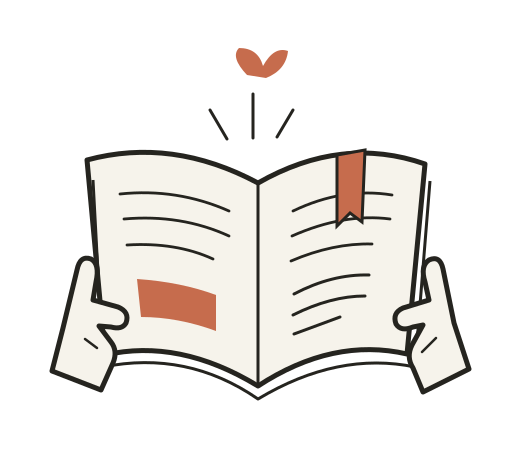
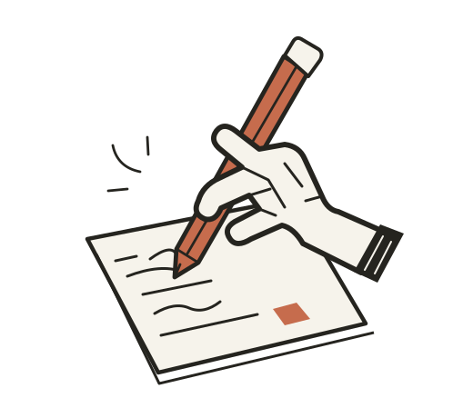

有时，一个想法的开始，不是灵光乍现。它更像是一颗落在桌面上的种子：很小，不确定，甚至还看不出会长成什么。
我们习惯于快速完成。打开文档，写下标题，填满段落，给每个按钮一个明确的目的。但在设计的早期，有些重要的东西恰恰发生在这些动作之间。
一张没有被填满的纸，一个暂时没有答案的问题，或者一段不急着做结论的对话。它们让我们有机会看见：我们原本以为知道的，可能还只是一个轮廓。
01 留白不是没有内容。
留白是一种安排注意力的方法。标题周围的空间，让一句话有了重量；图像与段落之间的距离，让读者能先感受，再理解。
如果所有元素都在努力吸引目光，页面就没有真正的重点。让一些地方安静下来，反而能使那些值得被看见的内容更清晰。
给想法一点空间，
它才有机会长成自己的样子。
02 照料，而不是催促。
种下一颗种子之后，我们无法用更多的指令让它立刻长成一棵树。可以做的，是给它合适的土壤、光照和时间。
对待一个尚未成形的想法，也可以如此。把它记下来，与另一个人讨论，为它找一张图片或一个比喻。每次回看，都给它补上一点真实的细节。

留下一点。A BOOK IS ALSO
A PLACE TO BEGIN.
这也是为什么我们喜欢具体的形象。一只正在写字的手，比一个孤立的几何符号更容易引发联想。一本打开的书，让“学习”成为一个可以感受的动作。
03 再回到那张纸上。
走开一会儿，再回来看看。也许需要删掉一句解释，放大一个标题，或者让插画稍微偏离中心。不是为了制造不规则，而是让页面更接近想表达的感觉。
完成不是把每个空位填满。它是知道哪些内容已经足够，也知道哪些地方可以继续保持开放。

这篇文章是为视觉设计示例创作的原创文字。
你可以修改它，让这个版式承载自己的故事。